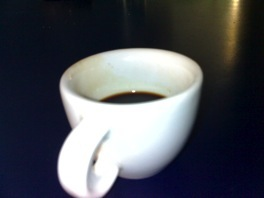

The word mathematics derives from the ancient Greek word μάθημα (máthema) which means science, knowledge, that derives itself from the verb μανθάνω (manthano) which means to learn.
Hence mathematics has been elevated since its origin to "the science of science".
There are many intellectuals that provided several definitions and discussion around mathematics. To cite only one of them, the positivist philosoper Auguste Comte did not include mathematics among with other sciences, because in his opinion it is the fundamental ground to all the disciplines.
In my opinion, mathematics can also be seen as a form of art.
The existence of a universal form of beauty may be debatable; however, many masterpieces, e.g. paintings or sculptures or musical composition, are widely regarded as beautiful. Nowadays, the art is grouped in visive, uditive and performative. I believe that near these three forms we should consider another one that is based on the human intellectual skills, namely logic. In this sense mathematics should be considered a form of art.
A mathematician is a machine for turning coffee into theorems. [Alfréd Rényi]
- On the inverse problem for deformation rings of representations, Master Thesis, Leiden 2010.
- Poster (for 9 months report), Southampton 2011.
- Transfer thesis (18 months), Southampton 2012.
- O'Nan-Scott Theorem (not final version), short note 2011.
- The subgroup structure of simple groups, talk for Postgraduate Seminar, Southampton 2011.
- Algebraic fixity for classical groups, talk at Young Algebraists' Conference, Lausanne 2012.
- Transfer thesis talk (not final version), Southampton 2012.
- Geometric actions of classical groups, talk at Groups St. Andrews 2013.
- PhD thesis, Geometric actions of classical algebraic groups. (Due to copiright issues this is available upon requests.)
The following two (unpublished) papers comprise results proved in my PhD thesis.